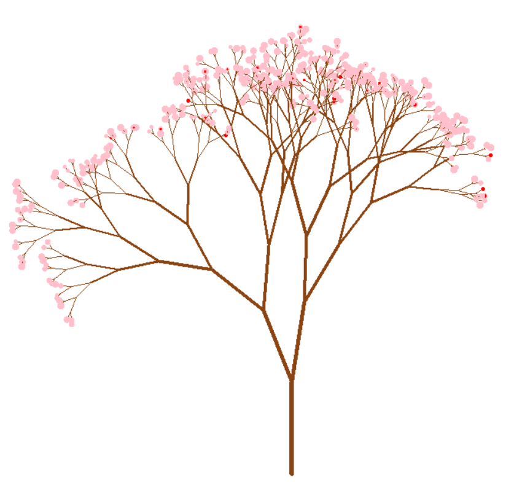
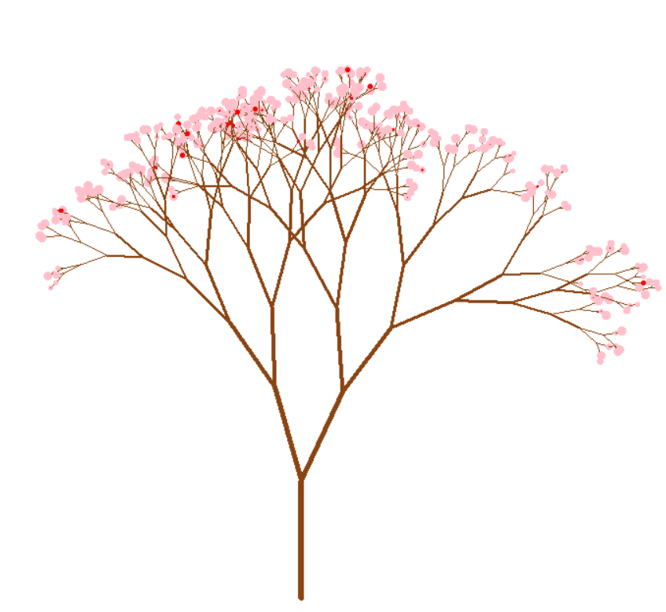
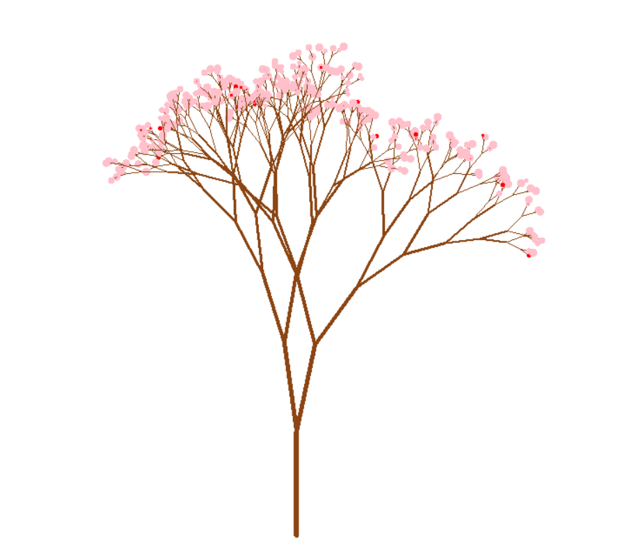

Each run produces a natural-looking tree due to random branch angles and flower placements.
Gallery



Python, Turtle, Random Module
Recursion, drawing logic, randomness, visual programming
Creative coding / visual art project
The turtle draws branches recursively, randomly changes branch angles, and adds flower dots at the end of smaller branches.
from turtle import *
import random
def drawBranch(branchLength):
if branchLength >= 5:
color('saddlebrown')
pendown()
pensize(branchLength/20)
forward(branchLength)
angleRight = random.randint(5, 30)
right(angleRight)
drawBranch(0.9*branchLength-random.randint(4, 10))
angleLeft = random.randint(5, 30)
left(angleRight+angleLeft)
drawBranch(0.9*branchLength-random.randint(4, 10))
penup()
right(angleLeft)
backward(branchLength)
else:
if (random.randint(1, 10) == 1):
color('red')
dot(random.randint(2, 6))
else:
color('pink')
dot(random.randint(5, 10))
tracer(False)
penup()
goto(0, -300) # Bottom
setheading(90)
pendown()
drawBranch(120)
hideturtle()
done()